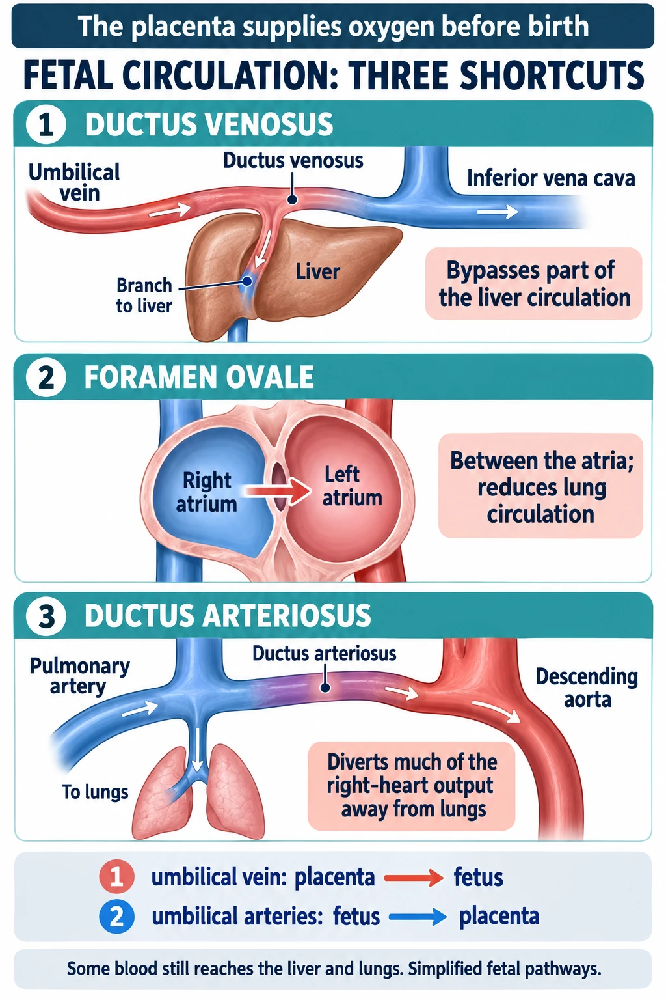

ABSN STUDY HUB · VISUAL STUDY CARD
Fetal circulation: the three shunts that route blood around the lungs and liver

Course labels and notes from the original graphic, arranged into readable sections. The illustration is schematic.
Course overview
- Fetal circulation: three shortcuts around the lungs
- Follow the blood from the placenta. Numbers 1, 2, 3 are the shunts. Color = how much oxygen the blood carries.
THE FETUS (front view, simplified)
Color key
- oxygen-rich · mixed · oxygen-poor
Placenta and cord
- PLACENTA: does the lungs' job: picks up O₂, drops CO₂ and the umbilical cord is the pipeline (below left)
- UMBILICAL CORD: 2 arteries + 1 vein — "AVA" · Wharton's jelly pads them
- umbilical vein: oxygen-rich, TO baby, ≈80% O₂ sat: the best blood
Past the liver
- Liver: most blood skips it, through shunt 1, the ductus venosus
- Also at the liver: hepatic veins · portal vein (gut blood, low O₂)
Into the HEART
- IVC (≈65–70% O₂) and SVC → RA right atrium
- Right side: RA → tricuspid → RV right ventricle
- Left side: LA left atrium → mitral → LV left ventricle
- Shunt 2, the foramen ovale: RA → LA
To the lungs
- RV → pulmonary artery → only a trickle reaches the lungs; the rest crosses shunt 3, the ductus arteriosus, to the aorta
- LUNGS: full of fluid, do no work (both drawn as one)
- a little returns to the LA by the pulmonary veins
Out to the body
- aorta: richest blood goes to brain + heart first (≈60–65% O₂ sat) → Head & brain, to arms
- descending aorta (mixed): ≈55–60% O₂ sat → gut & legs
Back to the placenta
- 2 umbilical arteries, from the internal iliac arteries: oxygen-poor, back to mom, ≈55–60% O₂ sat
Ductus venosus
Shunt 1: Ductus venosus
- Umbilical vein → inferior vena cava.
- Lets oxygen-rich placental blood skip the liver's slow capillary maze and reach the heart fast and still red.
- About half the cord blood takes it; the rest perfuses the liver first.
- AT BIRTH: cord clamped, no flow, it closes in a few days → ligamentum venosum
Foramen ovale
Shunt 2: Foramen ovale
- A flap-valve hole between the atria.
- IVC blood streams right atrium → left atrium, skipping the right ventricle and the lungs entirely, and goes out the aorta to the brain first.
- A ridge (crista dividens) aims the IVC stream straight at the hole.
- AT BIRTH: lungs open, left-atrial pressure rises, the flap presses shut → fossa ovalis
Ductus arteriosus
Shunt 3: Ductus arteriosus
- Pulmonary artery → aorta.
- Whatever the right ventricle pumps toward the fluid-filled lungs takes this exit to the body instead.
- Prostaglandins from the placenta hold it open while inside.
- AT BIRTH: rising O₂ + prostaglandin drop constrict it → ligamentum arteriosum. Stays open = PDA
THE BIRTH SWITCH: why all three shut
- 1. Cord clamped. The placenta was a huge low-resistance circuit; losing it makes body-side (systemic) pressure jump up.
- 2. First breaths. Air replaces fluid, lung vessels open, lung-side pressure falls, and the lungs finally take over gas exchange.
- 3. Pressures flip. Left side now beats right side, so flow through each hole reverses the flaps get pushed shut; rising O₂ closes the ductus arteriosus.
WHEN THEY CLOSE
- Foramen ovale: shuts within minutes–hours; sealed over months. probe-patent in about 1 in 4 adults (PFO).
- Ductus arteriosus: usually within the first day (10–15 h), by ~72 h; fibrosed in 2–3 weeks. Open after birth = PDA: continuous machine-like murmur.
- Ductus venosus: no flow once the cord is clamped; obliterated over the first 1–2 weeks.
💡 Nursing: indomethacin or ibuprofen closes a PDA; alprostadil (PGE1) keeps one open on purpose.